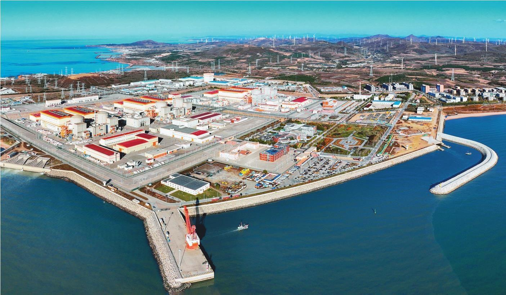

地理位置
中国辽宁省大连市
核电厂历史
红沿河核电厂是中国东北地区第一座建设的核电厂，也是中国在运的最大核电厂，其共有6台机组，其机组建成时间如下：
1号机组于2007年7月18日开工建设，于2013年2月17日并网成功，并在2013年6月6日正式商转。
2号机组于2008年3月28日开工建设，于2013年11月23日并网成功，并在2014年5月13日正式商转。
3号机组于2009年3月7日开工建设，于2015年3月23日并网成功，并在2015年8月16日正式商转。
4号机组于2009年8月15日开工建设，于2016年4月1日并网成功，并在2016年6月8日正式商转。
5号机组于2015年3月29日开工建设，于2021年6月25日并网成功，并在2021年7月31日正式商转。
6号机组于2015年6月24日开工建设，于2022年5月2日并网成功，并在2022年6月21日正式商转。
堆型与数量
截至2024年11月，红沿河核电厂共拥有4台运行中的CPR-1000型号压水堆机组（1-4号）以及2台ACPR-1000型号压水堆机组（5，6号）。
发电基本原理
压水堆（Pressurized Water Reactor）是采用高压水来冷却核燃料的一种反应堆，其工作原理为：主泵将120～160个大气压的一回路冷却水送入堆芯，把核燃料放出的热能带出堆芯，而后进入蒸汽发生器， 通过传热管把热量传给二回路水，使其沸腾并产生蒸汽，常在一回路水中加入硼酸，用以控制反应性的慢变化。之后，二回路产生的高压蒸汽会推动汽轮机发电，再经过冷凝器和预热器进入蒸汽发生器，完成二回路水循环。

图1：压水堆示意图
荣誉与贡献
自首台机组投产发电以来，红沿河核电站保持连续稳定安全供电，截至2022年3月底，红沿河核电站累计上网电量2041亿度。随着6号机组投入商业运行，红沿河核电站成为我国在运装机容量最大、也是世界第三大核电站，总装机容量超过671万千瓦，约占辽宁省全社会用电量的20%，与同等规模燃煤电厂相比，等效于减少标煤消耗约1452万吨，减排二氧化碳约3993万吨，相当于种植10.8万公顷森林。
图2：红沿河核电厂全景
猜猜红沿河核电厂一年的发电量是多少？
参考文献
1. 俞冀阳.核工程基本原理.北京：清华大学出版社，2018
2. 俞冀阳.核电厂系统与运行.北京：清华大学出版社，2016
3. 2024年中国核电行业研究报告，2024
4. 中国科学院上海应用物理研究所.浅谈沸水堆与压水堆，2011
5. AP1000反应堆压力容器的制造难点与监造应对措施
6. 国家核安全局网站
7. 国家原子能机构红沿河成为我国在运最大核电站，2022